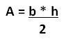

.

Descripción:
- Desarrollarás, en conjunto con
el profesor. algunos problemas que implican el uso de condicionales y
funciones.

Objetivos:
- Aplicar las estructura de
control if (if, else, elif anidados) y los operadores relacionales.
- Aplicar los conocimientos
sobre funciones.
- Reconocer la importancia del
uso de funciones para el diseño de un programa.

Modalidad:

Instrucciones:
- Implementa las siguientes funciones, recuerda
que las funciones se definen antes de la función del main y del
script principal.
-
La función
main()
debe mandar llamar a la función que imprima el menú
correspondiente y de acuerdo a la opción seleccionada por el
usuario le dé la oportunidad de ejecutar cualquiera de las
funciones que han sido construidas. Utiliza el estatuto de control
if anidado. Recuerda que la captura de datos debe ser
realizada en la sección del main. Valida opciones incorrectas.
-
En el
script principal manda
llamar a la función main.

Ejercicios:
.
Escribe tu
matrícula y nombre al inicio de tu
programa: print("Matrícula Nombre")
-
La función
kilometros_millas (km)
que recibe
una cantidad dada en kilómetros y regresa su equivalente en millas.
Equivalencia
1 milla = 1.6 km.
Casos de prueba:
Input:
Número de opción (1. Kilometros a millas)
Input:
Cantidad en kilómetros
Output:
Cantidad en millas
|
Input:
1
Input:
10
Output:
6.25
|
Input:
1
Input:
5.5
Output:
3.44
|
- La función
gramos_onzas (gramos) que
recibe una cantidad dada en gramos y regresa su equivalente en
onzas. Equivalencia 1 onza = 28.35 gramos.
Casos de prueba:
Input:
Número de opción (2. Gramos a onzas)
Input:
Cantidad en gramos
Output:
Cantidad en onzas
|
Input:
2
Input:
80
Output:
2.82
|
Input: 2
Input: 1350.5
Output: 47.64
|
-
La función triangulo (b, h) que
recibe la base (b) y la altura (h) y regresa el área del
triángulo.


Casos de prueba:
Input:
Número de opción (3. Triángulo)
Input:
Valor de la base b (real)
Input:
Valor de la altura h (real)
Output: Superficie de la figura (real con dos decimales)
|
Input:
3
Input:
7.4
Input:
5.9
Output:
21.83
|
Input:
3
Input:
6.2
Input:
4.7
Output:
14.57
|
- La
función menu ()
que despliegue el siguiente menú en pantalla:
.
La función
main
()
que utilice la función menu y de
acuerdo a la opción seleccionada por el usuario utilice la función
apropiada de las implementadas anteriormente. Utiliza el estatuto de
control
if anidado. Recuerda que la captura de datos debe ser
realizada en la sección del main. Valida opciones incorrectas.
Casos de prueba:
Input:
Número de opción
(4. Salir o una opción inválida)
Output:
Mensaje correspondiente
|
Input:
4
Output:
Adiós
|
Input: 6
Output: Opción inválida
|
Input:
-4
Output:
Opción invalida
|
-
En el
script principal manda
llamar a la función main.
Guarda tu archivo como:
lab3_Matricula.py

Especificaciones
de entrega:
- Formato de entrega: py
- Nombre de los entregables:
lab3_matrícula.py
- Medio de entrega: Se entrega en la sección de Lab3.
Funciones
|